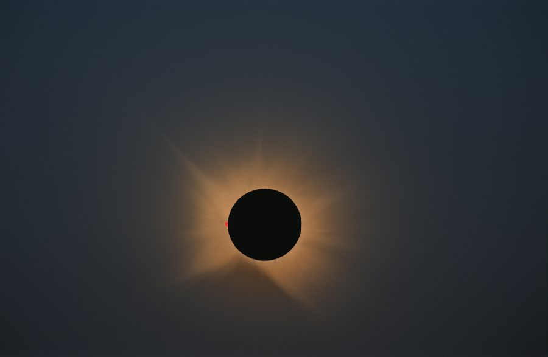

Fotografía y medidas del cielo
Cielo profundo, el eclipse y curvas de luz de exoplanetas desde el observatorio AstroCamp. Y las herramientas con que lo hago, abiertas a todos.
NuevoEclipse solar del 12 · VIII: el paso de la Luna, en vídeo.Ver el vídeoTabula I
Herramientas web
Se abren en el navegador, sin instalar nada.
 Nº IBeta
Nº IBetaCabraSpace Web
Procesa tus imágenes en el navegador: estirado, máscaras, anotación y separación de estrellas.Abrir CabraSpace Web Nº IIAstro Forecast
Cómo será la noche en AstroCamp.Abrir Nº IIIAutoGHS
Estirado GHS automático.Abrir Nº IVContaminación lumínica
El brillo del cielo en tu zona.Abrir Nº VPixelMath-teca
Fórmulas listas para copiar.AbrirPróximamenteCabraPlanes
Tabula II
Observaciones
Lo último del cuaderno.
 Tránsito de Qatar-1 b
Tránsito de Qatar-1 b

Eclipse solar del 12 de agosto PK 164+31.1, nebulosa planetaria
PK 164+31.1, nebulosa planetaria
 M82, la galaxia del Cigarro
M82, la galaxia del Cigarro
Programas, en el taller
Para instalar en PixInsight no hay ninguno publicado ahora. En el taller: CabraSolar (Sol en H-alfa), CabraEclipse (eclipses totales) y CabraTransit (fotometría de tránsitos).